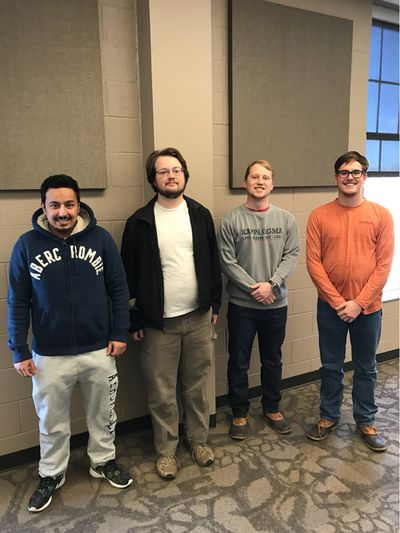
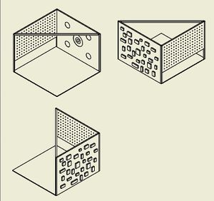
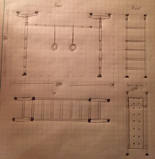
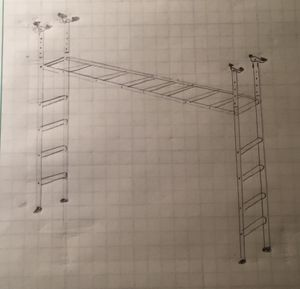
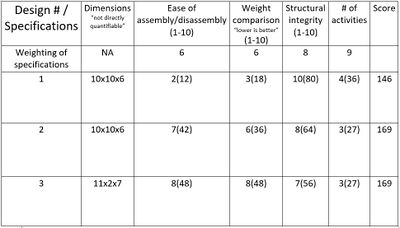

Proprioceptive sensory toy
Abstract
The family needs a system that the child can climb, hang, and use energy. It needs to be compactable or datable for storage during the time the kid can play outside. The child highly request a peg wall and a velcro wall to throws at. Also attachments for gymnastics rings are required, along with attachments for a swing that the family already owns. Also any thing that can be added for the child to hang on is highly encouraged. The team as a 11"x11"x7" area to work in.
Team members
- 
- Nasser Almutairi, Samuel Worley, Lance Kelly, Cody Coppinger
Acknowledge help of others
- other
Problem Statement/overview of the need
We are building an exercise/play structure for a young boy. He needs a way to use up his energy on days when playing outside is impossible. His upper body is strong, and he likes to climb, so we will be making a climbing wall and other gymnastic equipment as part of the structure. It needs to be easy to setup and break down for the family so that it can be put in storage when not in use. The boy has problems when dealing with cold and hot weather, which limits the time he can spend outside.
Design Specifications
- 1. Dimensions: within 11' by 11' by 7'
- 2. Ease of assembly/disassembly
- 3. Weight
- 4. Structural integrity: hold child's weight and more
- 5. Number of different activities
Background research
- 1. Peg Climbing Wall (http://www.roguefitness.com/rogue-pine-maple-peg-board?prod_id=28632&gclid=CI_dk5z0jdICFYiLswod0ZwJtg)
- 2. Indoor Monkey Bars (http://limikids.com/order-home-gym-for-kids)
-

Conceptual Design
Summarize your conceptual design process. Develop at least three concepts.
Design Concept 1
- This design will have a square or rectangle (depending on the finalized lengths of peg wall and climbing wall) base with walls on two sides. The walls will be connected at the corner and via a diagonal support bar across the middle. One wall will have the peg wall across the top half of the allowed space. The second wall will have a climbing wall on the outside and a velcro target on the inside. The support bar will have hooks/attaching areas to allow a hammock swing or other devices to be connected as needed. The peg wall and climbing wall will be composed of several pieces that fit together to allow easier disassembly and storage.
- 
Design Concept 2
Design Concept 3
- This design will function like standard monkey bars and allow for attachable gymnastic rings, swing, peg climbing board, etc. The design is supported by four floor and four ceiling supports. The ceiling supports will have an adjustable length to better fit the space. The vertical supports will be detachable from the horizontal bar for storage purposes.
- 
- 
Evaluate concepts/select candidate
- 
- After going through the process of making this decision matrix, We deciding that neither of the better ideas completely satisfied what we are trying to construct. We want to fill the allotted design parameters with as many activities while keeping the structure stable, easy to move, and simple to assemble/disassemble. Therefore, we decided to adapt parts of Design 3 and Design 1 into the framework of Design 2. The frame of Design 2 allows us to add more activities to the top and back wall of the structure.
Detailed Design
Description of selected design
- The new design has the same general frame as Concept Design 2, but the back wall will be split into two different parts, and monkey bars will be added to the top.
Detailed description of selected design
- The frame of the design will consist of two posts at the front for stability of the frame and a back wall that will have activities attached to it. The back wall has two inner columns to support the outer rectangular frame. Two panels will be attached to the back wall: a peg board and a rock climbing wall. The two boards will each cover half of the wall. The top of the structure has monkey bars in the center that run parallel to the back wall. On either side of the monkey bars, cargo net will be attached between the bars and the out side of the frame.
Analysis
- The analysis done on the structure will consist of: Buckling analysis, Shear and Moment analysis, Cantilever analysis, Rope Tension, and Shear in bolts analysis
Buckling analysis of front posts
After doing a buckling calculation, we determine that 3200 pounds of force will be required to make this beam buckling. This gives us a factor of safety of about 16. All cross-sectional areas and moment of interia was calculated using the solid works models.
Shear Moment analysis of horizontal frame bars
With a hanging 250lb force, we determined that the max shear is +/-125lb and the max moment is 625ft*lb.
Through a quick beam deflection calculation using E1 of Buchanan, we found that the maximum deflection is 0.056 inches in the direction of the force.
Tension in ropes
- The ropes being used have a weight capacity of 600 lbs.
- Even with the full force of an upper limit of a 150 lb point mass (which is much higher than the weight of the child), this would have a safety factor of 4 in the most severe static situation.
- While the rope will not have any problems with the force, we will have to consider where the cargo net attaches to the frame.
Shear on bolts in rock climbing wall
- I will use a 150 lb point mass again for calculating the shear in a bolt used to attach one of the handholds to the rock climbing wall.
- Grade 18-8 stainless steel bolts have a minimum yield strength of 20 ksi and a minimum tensile strength of 65 ksi (the typical values are 65 ksi and 100-150 ksi respectively)
- While the shear strength of the bolts is not given, in practice, the shear strength is judged to be about 60% of the tensile strength. Assuming this leads to a shear yield strength of 12 ksi and a shear strength of 39 ksi.
- We would probably be using 3/8 inch bolts which would have a cross sectional area of A = (1/4)πD^2 = 0.110447 square inches.
- Following these assumptions, the shear in the bolt would be τ = F/A = 150/0.110447 = 1358.12 psi = 1.35812 ksi.
- Comparing the shear in the bolt to the assumed properties produces a safety factor of 8.84 between the shear and the yield point. This is a reasonable level of safety.
- Also, there may be more than one bolt on the handhold for stability purposes, leading to a much higher safety factor.
CAD Drawings
Insert drawings of all parts and the assembly
</gallery>
Bill of Materials
Assembly Instructions
- 1. Lay frame on ground with shorter side up
- 2. Unfold shorter side and slide braces on each of four beams up to hinge.
- 3. Firmly tighten brace bolts with Allen wrench.
- 4. Pull up back section of frame at hinged edge until wall is standing with the longer top section of frame angled to ground.
- 5. One person lift unsupported side of top section while another person slides the support legs into the two corners and firmly tightens with Allen wrenches.
- 6. Two people pick up a climbing wall board and slide bolts into the brackets on each side of the supports. Put a washer and a nut on the outside of the brackets and make them hand-tight.
- 7. Repeat the last step, ending with two boards on each side.
- 8. Put a support bracer(two foot metal beam) on the bottom of each of the hinged areas of the monkey bar section. Slide bolts in and tighten fully with socket wrench.
- 9. Slide backboard onto outer slot of back wall.
- 10. Rotate diagonal wooden supports on outside of frame up to the top beam of the frame. Tighten bolt onto slider nut in beam.
- 11. Hang velcro targets from bolts on top of back wall.
Fabrication Process
Testing and implementation
We tested the frame by hanging on different sections of the structure to see the bending at those points. Dr. Canfield also did a thorough test of the structure by fully using the monkey bars and stressing the product as much as possible. We had to had another support bracket because of some significant bending at the hinge connections.
We delivered the structure to the family by using Lance's truck. We had a small issue with miscommunication of where the address was, so it took longer than expected to deliver it.
We helped set it up in the specified space, and the child tested it out. He seemed to like it, but the structure was set up in the middle of their living/dining room area. The dimensions provided for the space didn't include what the area was normally used for. Because of this, we doubt that the structure will be set up often.
Photos of Completed design
Instructions for safe use
Don't attempt to set up the device with one person. It is a job that requires multiple people.
The structure is strong enough to handle pretty much anything that a child could attempt on it, but there should still be supervision by an adult in case of falls or hitting hard against the frame.
Do not use the device unless supervised by an adult that has been fully understood the safe use of this product.
Project Summary, Reflection
We designed and fabricated a partially collapsible jungle gym like structure for indoor use. The frame folds down into a fairly flat configuration of about 6' x 10'. The structure includes monkey bars, rope nets, a peg wall, and a climbing wall.
We learned a few different aspects about projects and design in general. We should have been stricter with our timeline because we ended up doing a lot of the assembly work during dead week and finals week. We had to deliver the project on the last day of the semester. The structure turned out well according to our design, but it didn't fit the real constraints of the usable space well. We were only given dimensions, and we didn't think to ask what else might be in that space. We assumed (incorrectly) that the space was completely empty during our design process. Communicating with the family better could have solved that problem.